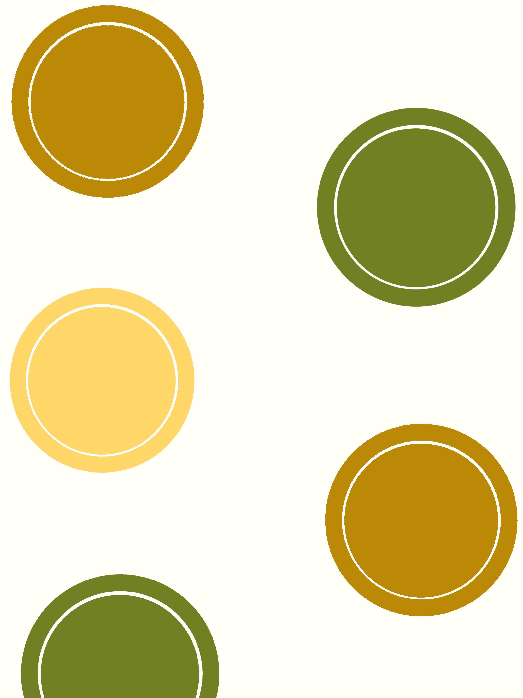
La tradizione romagnola incontra i sapori dell'Appennino modenese.
Ogni giorno prepariamo pasta fresca e specialità della tradizione, seguendo gesti, ingredienti e ricette che raccontano il nostro territorio. Le nostre sfogline lavorano con passione per portare sulle vostre tavole l'autentico sapore delle feste, della domenica e della famiglia.
Scopri la nostra storia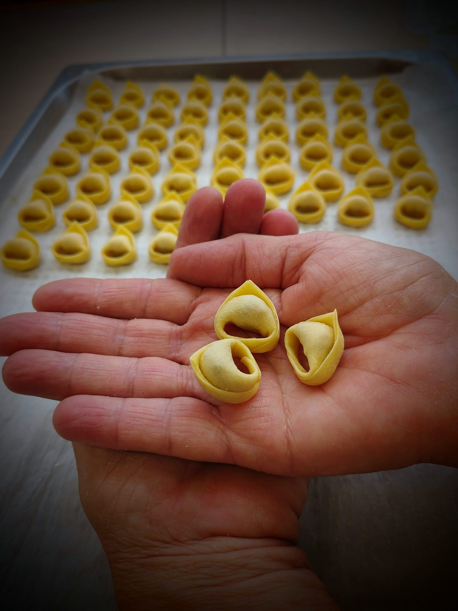
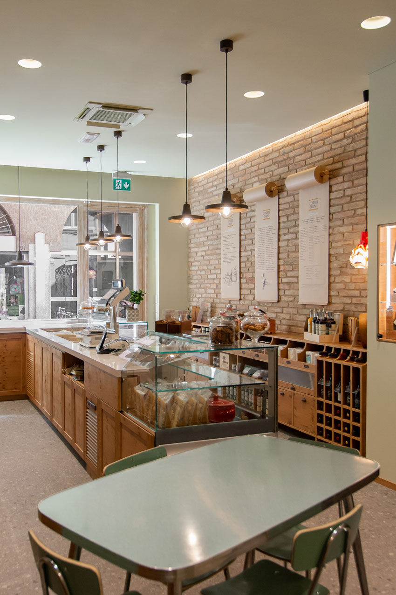
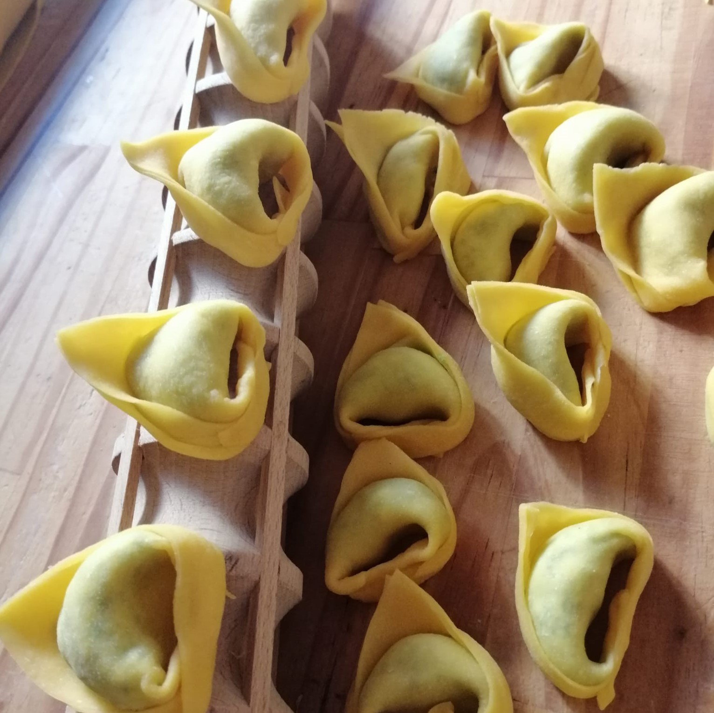
La pasta nasce qui, ogni giorno. Dalla sfoglia alla lavorazione, ogni fase racconta una scelta precisa: preservare il gusto e la tradizione della pasta fresca artigianale. Il nostro laboratorio è il cuore pulsante della Dispensa, dove farina, uova e tempo si trasformano in magia.
Visita il laboratorioL'incontro perfetto tra la cultura gastronomica della Romagna e i sapori intensi dell'Alto Appennino Modenese. Non siamo solo una gastronomia a Rimini: siamo un ponte tra due tradizioni d'eccellenza.
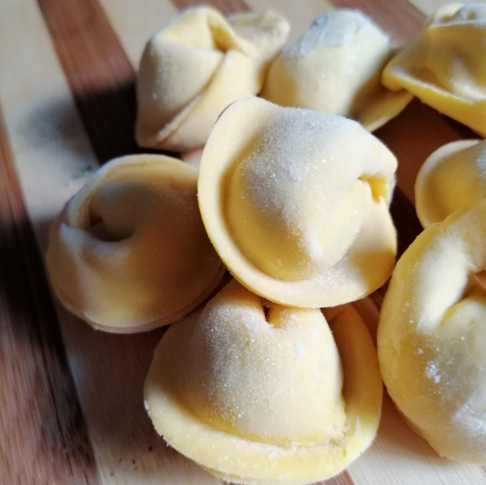

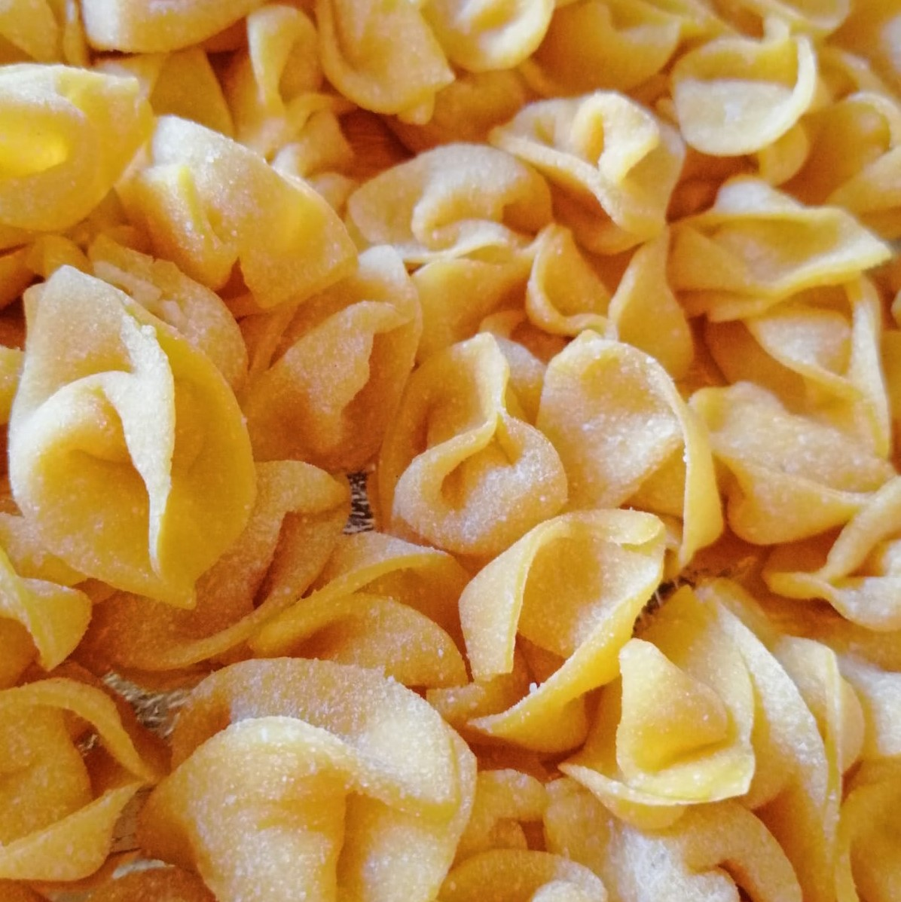
Selezioniamo solo eccellenze del nostro territorio per i nostri ripieni e per le nostre sfoglie.
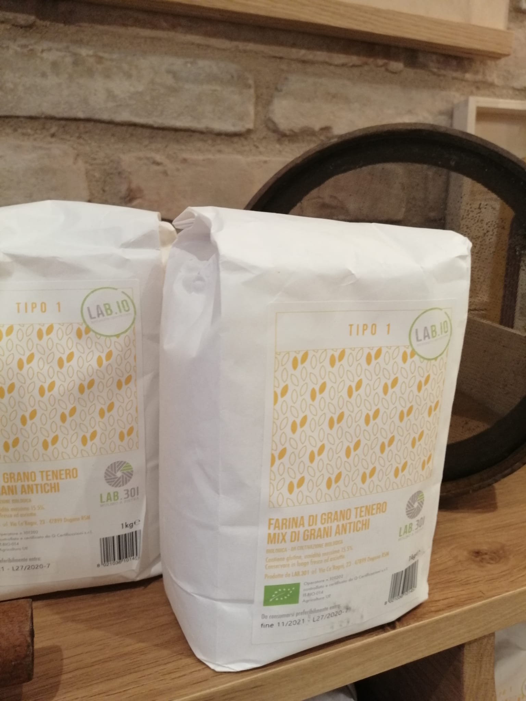
Macinata a pietra, ricca di fibre e germe di grano, perfetta per una sfoglia ruvida e corposa.
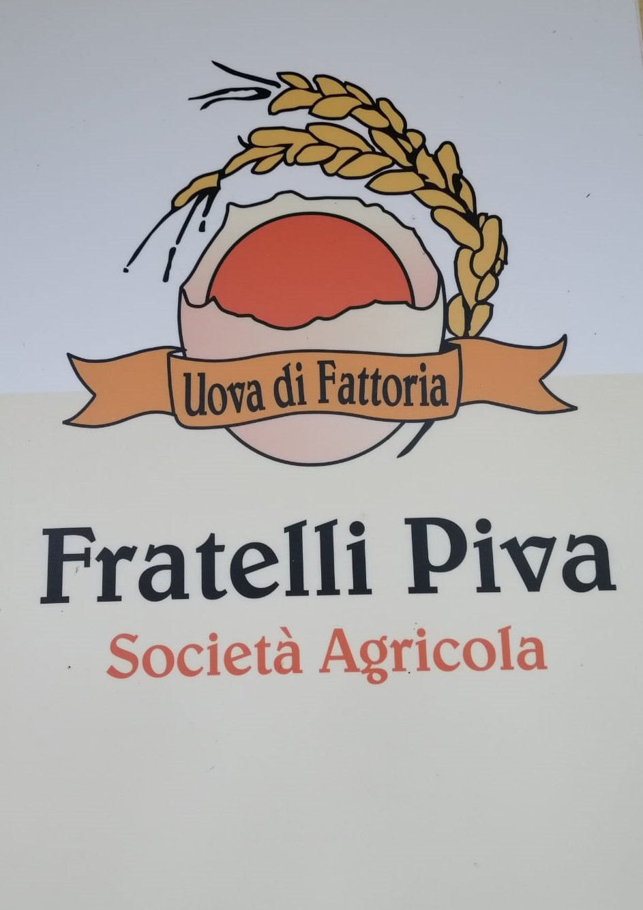
Uova freschissime da allevamenti locali selezionati, per dare colore e sapore alla vera pasta all'uovo.
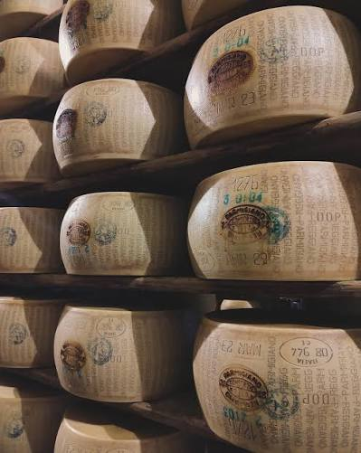
Selezionato dall'Alto Appennino modenese, stagionature perfette per ripieni e gratinature.
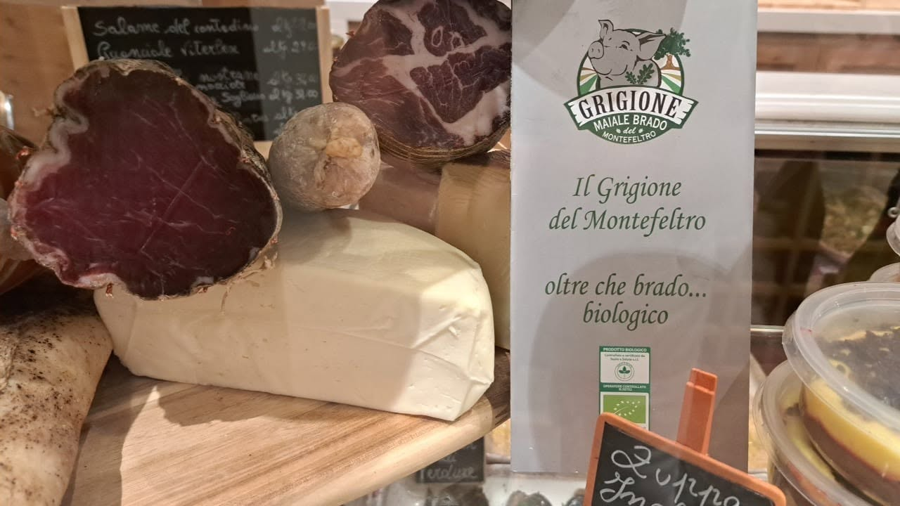
Carni di altissima qualità per i nostri tortellini, cappelletti e ragù della domenica.
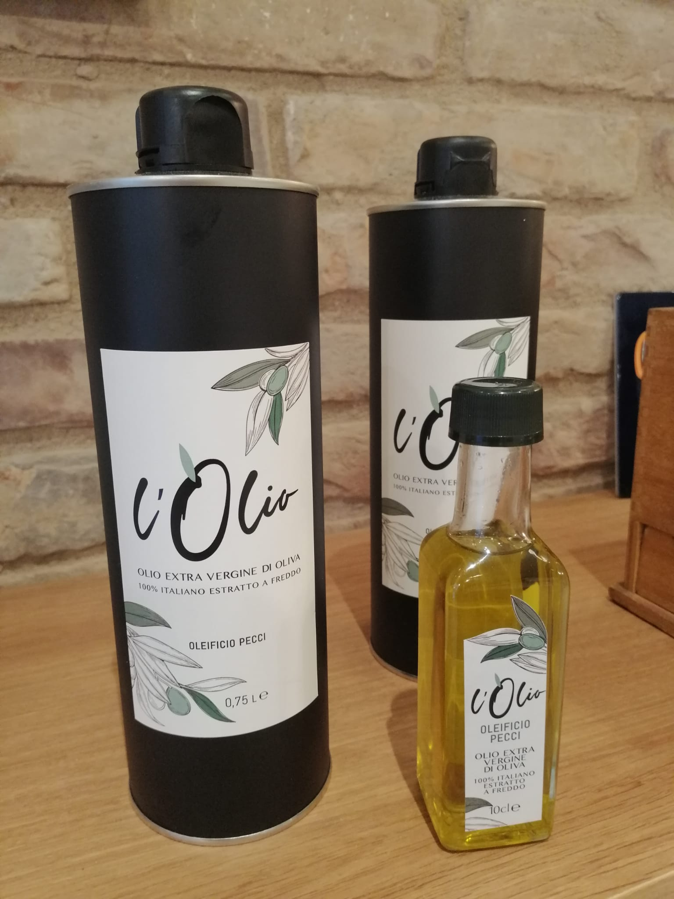
Olio EVO di frantoio selezionato, dal profilo fruttato, ideale per esaltare condimenti e preparazioni.
L'affetto e le parole dei nostri clienti.
"La vera pasta fresca romagnola, come la faceva mia nonna. Consigliatissimi i tortellini!"
"Gastronomia eccellente nel centro di Rimini. Materie prime di altissima qualità e cortesia."
"Il laboratorio a vista è una garanzia. Senti i profumi ancor prima di entrare."